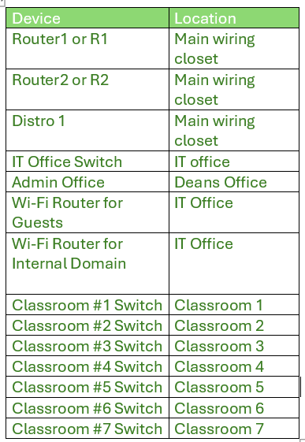

WCAT Documentation Wiki
Welcome to the internal documentation portal for WCAT (Winnipeg College of Advanced Technology). This wiki provides details on network infrastructure, project scenarios, and topological layouts used in our IT infrastructure demos.
Scenario A
A small Information Technology school is being built nearby. To facilitate learning & work, several IT services are needed. To put simply, the school needs internet access, a directory service, user accounts, internal email communications, a website, network and system redundancy, & security.
The school needs a minimum of 4 subnets & user groups: Students (or guest access), Instructors, Staff (or other Staff outside of Instructional), & IT. Between 250-500 students can be enrolled at a given time. There are 7 lab rooms with 25 workstations per room. Then, 3 general purpose rooms which should have internet access.
Given this background, present a small demo of what the school could expect from your group if contracted to build the full production environment. Construction depends on provided documentation.
Network Infrastructure
Here is WCAT's network diagram. This diagram was made in Packet Tracer and replicates what our network would look like within the building. However due to our resources our demo will only be about the IT office infrastructure.

This is our VLAN table where all our subnets for the network diagram are. Each classroom subnet is a /27 network due to meet the 25 lab workstation requirement. The other subnets are broken down as well to have the appropriate amount of subnets as well. An Extra VLAN of VLAN 130 is added for scalability. The WiFi private and guest subnets are also added for both routers and the internal WiFi router is in the Domain Controllers VLAN.

Topologies
Physical Topology
This layout shows the physical floorplan of the WCAT building, including the location of classrooms, offices, server room, and general purpose rooms. The diagram reflects the location and arrangement of connected devices and infrastructure.
Logical Topology
The following diagram represents the logical topology used for designing WCAT's infrastructure demo. It was built in Cisco Packet Tracer and provides a full overview of subnetting, routing, and switching infrastructure.
Legend
This table defines key symbols used in our topologies to represent objects such as doors, computers, and ethernet cables.